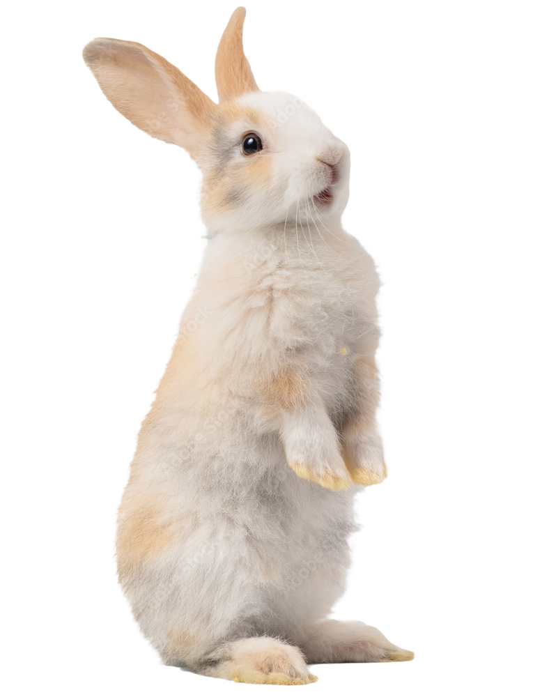

Faça sua doação

Seja um padrinho ou madrinha

Ser um voluntário PET é um ato de amor e dedicação que envolve cuidar e proporcionar bem-estar para animais em situação de vulnerabilidade. Esse papel exige paciência, empatia e compromisso, pois você estará diretamente envolvido no resgate, reabilitação e adoção de animais necessitados. Desde oferecer cuidados diários e medicamentos até promover
a socialização e apoio emocional,ser um voluntário PET é fundamental para garantir que cada animal tenha a chance de uma vida melhor. A satisfação vem não apenas de fazer uma diferença tangível na vida dos animais, mas também de se tornar parte de uma comunidade que compartilha a mesma paixão por ajudar e proteger nossos amigos de quatro patas.